library(plotly)
plot_ly(iris,
x = ~Sepal.Length, y = ~Sepal.Width, z = ~Petal.Length,
type = "scatter3d", mode = "markers",
marker = list(size = 4, color = "grey30"))Principal component analysis
Margin legend
DEF — definition of a term.
KEY — a central idea to remember.
↪ — link to another chapter or lecture.
⚠ — common pitfall or point of caution.
Where we are in the course
Every model on Day 1 had the same anatomy:
\[\text{response} = \text{deterministic part} + \text{residual},\]
with the residual drawn from an assumed distribution. A response variable was always there, sitting on the left of the tilde in every lm() call.
↪ Day 1 — the statistical thesis: a complex data-generating process approximated by a simple model, with variance partitioned between structure and residual.
We now enter machine learning, and the first thing we do is take the response variable away. Suppose we have only measurements — four flower dimensions, seven athletic disciplines, a thousand gene expressions — and no outcome to predict. Is there still statistics to do? There is, and it is the same statistics: we still approximate a complex data cloud by a simple structure plus a residual. The difference is that the structure is no longer “the effect of treatment on the mean” but “the few directions in which the data actually vary”. Methods that work without a response are called unsupervised.
DEF Unsupervised learning: methods that look for structure in the predictors alone, without a response variable to guide (“supervise”) the search.
Principal Component Analysis (PCA) is the oldest and most widely used unsupervised method. It is:
- a dimension reduction and ordination algorithm: it maps data with many variables into a low (usually 2) dimensional projection;
- a qualitative visualization method and an exploratory method;
- a tool for finding variables with potential importance for further study.
DEF Ordination: arranging objects along constructed axes so that similar objects lie close together — a term you will meet often in community ecology.
That last point matters for how you use it: PCA does not test hypotheses. It shows you where the variance lives, and variance — as this whole course has argued — is information.
↪ Day 2: the largest source of variance is not always biology. In the batch example of the design chapter, the first principal component was the sequencing run.
The principle of dimension reduction
It’s a bottle
Look at the shape below. What is it?
A circle — that is all you can say. Now look at the same object again, projected onto a different plane:
It’s a bottle. Both images are two-dimensional projections — shadows — of the same three-dimensional object. The projection from above collapses almost all of the shape’s variation and leaves a circle. The projection from the side preserves the direction in which the bottle varies most (its height) and is immediately recognizable.
KEY A projection is a shadow. Different shadows of the same object carry very different amounts of information. PCA finds the most informative shadow — and information here means variance.
This is the entire idea of PCA in one image. Our data live in \(p\) dimensions — one dimension per measured variable — and we cannot look at more than two or three at a time. Every plot we make is a projection, and a badly chosen projection is the circle: technically correct, practically useless. PCA constructs the projection that keeps as much of the total variance as possible, so that what we see on paper is the least distorted shadow of the data cloud that two dimensions allow.
Try it yourself: the Iris cloud
The famous Fisher (or Anderson) iris data set gives measurements, in centimetres, of sepal length and width and petal length and width for 50 flowers from each of three iris species: Iris setosa, versicolor, and virginica. Below is a dynamic 3D representation of three of the four variables. You can rotate the plot with your mouse or track-pad. The fourth variable, petal width, is not shown here but is used in the analysis later on.
In-class assignment. Without any species information:
- Find the best 2D representation of this 3D data cloud by rotating the graph — try to separate the flowers into clusters.
- Find the 2D view that captures the most variance.
- Which coordinate — sepal length, sepal width, or petal length — contributes most to separating the clusters?
- Which coordinate captures the most variance?
Hard, isn’t it? Now the same cloud with the species information added:
With the colours you are supervised in your search for a good projection: the species labels tell you which separation matters. This is exactly the distinction between supervised and unsupervised learning. PCA must solve the harder, uncoloured problem: find the best low-dimensional view using nothing but the variance in the data itself.
KEY The colours are supervision. Take them away and “the best 2D view” must be defined by the data alone — PCA defines it as the view with maximal variance.
Are there other ways of visualising?
A matrix plot shows all pairwise projections at once:
Code
library(ggplot2)
library(GGally)
ggpairs(iris, aes(color = Species),
columns = c("Sepal.Length", "Sepal.Width", "Petal.Length", "Petal.Width"))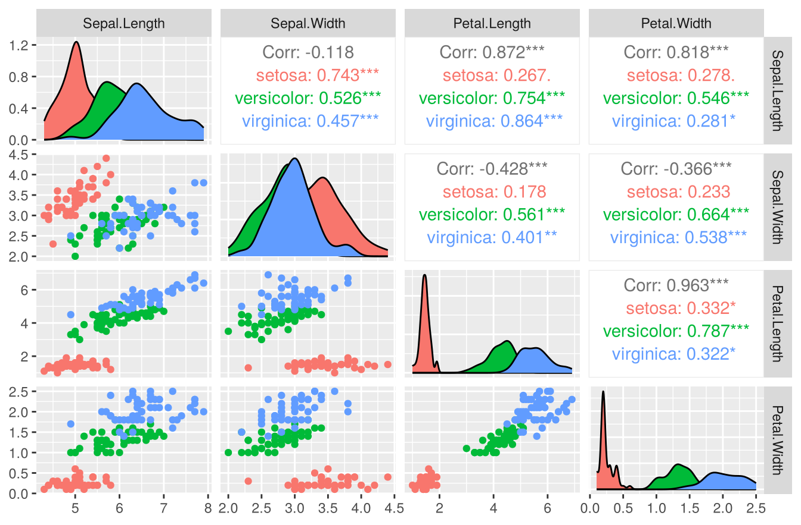
This is honest but inefficient: with \(p\) variables there are \(p(p-1)/2\) panels, each a projection onto just two of the original axes. None of these axes was chosen to be informative — they are simply the variables we happened to measure. PCA’s proposal is to build new axes, as combinations of the old ones, chosen so that the first few carry most of the story.
The raw material: variance and covariance
PCA is built entirely from the variances and covariances of the variables. For the iris measurements:
Variances <- round(apply(iris[, 1:4], 2, var), 4)
cbind(Variances)#> Variances
#> Sepal.Length 0.6857
#> Sepal.Width 0.1900
#> Petal.Length 3.1163
#> Petal.Width 0.5810COV <- cov(iris[, 1:4])
print(COV)#> Sepal.Length Sepal.Width Petal.Length Petal.Width
#> Sepal.Length 0.6856935 -0.0424340 1.2743154 0.5162707
#> Sepal.Width -0.0424340 0.1899794 -0.3296564 -0.1216394
#> Petal.Length 1.2743154 -0.3296564 3.1162779 1.2956094
#> Petal.Width 0.5162707 -0.1216394 1.2956094 0.5810063cor(iris[, 1:4])#> Sepal.Length Sepal.Width Petal.Length Petal.Width
#> Sepal.Length 1.0000000 -0.1175698 0.8717538 0.8179411
#> Sepal.Width -0.1175698 1.0000000 -0.4284401 -0.3661259
#> Petal.Length 0.8717538 -0.4284401 1.0000000 0.9628654
#> Petal.Width 0.8179411 -0.3661259 0.9628654 1.0000000DEF The covariance matrix \(S\) holds the variances of each variable on its diagonal and the covariances of each pair off the diagonal. Correlation is covariance rescaled to \([-1, 1]\).
A short reading guide for these three outputs. The variances tell you how much each variable moves on its own scale — and immediately reveal a problem we return to below: petal length varies sixteen times more than sepal width, simply because of what was measured in what units. The covariances tell you which variables move together: a positive value means flowers above average on one tend to be above average on the other; a negative value means they trade off. But a covariance of 1.27 is hard to judge — is that a lot? It depends on the scales of both variables. The correlations answer that by rescaling every covariance to the unit interval: sepal length and petal length correlate at 0.87, which is strong by any standard, while the sign pattern (sepal width negative against everything) is the same as in the covariance matrix, now easier to see.
Read the covariance matrix as a map of shared variation. Petal length has by far the largest variance (3.12) and covaries strongly and positively with sepal length and petal width; sepal width is the odd one out, varying little and pointing the other way. A graph makes the same structure visible — nodes are variables, edge thickness is the (absolute) covariance:
Code
library(igraph)
set.seed(965)
g <- graph_from_adjacency_matrix(abs(COV), mode = "undirected",
diag = FALSE, weighted = TRUE)
E(g)$width <- E(g)$weight * 5
plot(g,
vertex.label = colnames(COV),
vertex.size = 15,
vertex.label.cex = 0.8,
main = "Graph from Covariance Matrix")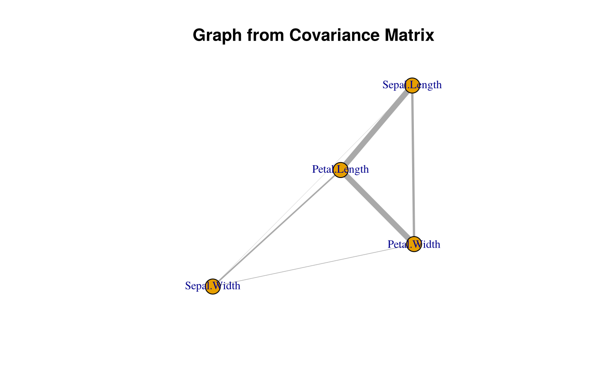
Variables that covary strongly are partly redundant: knowing one tells you much about the other. Redundancy is exactly what dimension reduction exploits. If four variables share most of their variation, the data cloud is not truly four-dimensional — it is a lower-dimensional structure, thickened by residual scatter. PCA finds that structure.
KEY Strong covariance = redundancy = the data cloud is flatter than it looks. That flatness is what PCA recovers.
PCA formally
Now that the scenario is clear — a \(p\)-dimensional cloud, and we want the directions of maximal variance — we can write the method down. Let \(X\) be the data matrix with \(n\) rows (observations) and \(p\) columns (variables).
Step 1 — Center the data. Subtract each column mean, so that the cloud’s centre of mass sits at the origin:
\[X_c = X - \bar{X}.\]
Step 2 — Covariance matrix. Compute
\[S = \frac{1}{n-1} X_c^\top X_c ,\]
the \(p \times p\) covariance matrix of the (centered) variables.
Step 3 — Eigenvalue decomposition. Find the eigenvalues \(\lambda_1 \ge \lambda_2 \ge \dots \ge \lambda_p\) and eigenvectors \(\phi_1, \dots, \phi_p\) of \(S\):
\[S = V \Lambda V^\top ,\]
where the columns of \(V\) contain the eigenvectors (the principal axes) and \(\Lambda\) is the diagonal matrix with the eigenvalues, ordered by size.
What does this decomposition do? Think of it as finding the coordinate system that fits the cloud instead of the one we happened to measure in. In the original coordinates the covariance matrix is full of off-diagonal entries — the variables are entangled with each other. The eigendecomposition rotates the axes to the orientation in which all those off-diagonal covariances vanish: expressed on the eigenvectors, the data have a diagonal covariance matrix, with the eigenvalues on the diagonal. In other words, the eigenvectors are the directions along which the cloud varies independently, and each eigenvalue is exactly the variance of the data along its eigenvector. Ordering the eigenvalues by size then orders the new axes by how much of the cloud’s spread each one carries — which is precisely the “most informative shadow first” that the bottle example asked for.
DEF An eigenvector of \(S\) is a direction that \(S\) only stretches, not rotates; its eigenvalue is the stretch factor. For a covariance matrix, the eigenvalue is the variance of the data along that direction.
The first principal component
For a dataset with \(p\) variables and \(n\) observations, the first principal component is the normalized linear combination
\[Z_1 = \phi_{11} X_1 + \phi_{21} X_2 + \dots + \phi_{p1} X_p ,\]
where \(Z_1\) is the first principal component and the coefficients \(\phi_{j1}\) — the entries of the first eigenvector — are called the loadings or rotations. They orient the new axis relative to the original variables.
We find \(\phi_1\) by solving a constrained maximization: choose the direction through the origin that captures the most variance,
\[\max_{\phi_1} \; \operatorname{Var}(X_c\,\phi_1) \qquad \text{subject to} \qquad \sum_{j=1}^{p} \phi_{j1}^2 = 1 .\]
The first part maximizes the variance captured; the constraint pins the length of \(\phi_1\) to one, so that “more variance” cannot be achieved by simply making the coefficients bigger. The loadings then have a clean interpretation:
- \(\phi_{j1} = 0\): variable \(j\) has no correlation with PC1;
- \(\phi_{j1} = 1\) or \(-1\): variable \(j\) correlates perfectly with PC1, and all other loadings must then be 0.
It helps to read the linear combination as a recipe. Each observation’s value on PC1 is a weighted sum of its original measurements, and the loadings are the weights: “take 0.52 parts sepal length, subtract 0.27 parts sepal width, add 0.58 parts petal length…”. PCA’s job is to find the one recipe (per component) whose resulting mixture has the largest possible variance across the observations. Variables that carry the shared variation get large weights; variables that mostly add noise, or vary in a direction of their own, get weights near zero on this component — and typically get their moment on a later one.
⚠ Without the unit-length constraint the maximization is meaningless — variance can be inflated at will by scaling the coefficients. The constraint is what makes the direction, not its length, the object of interest.
Scores and loadings
The scores are the new coordinates of the observations on the principal component: the coordinate of observation \(i\) along PC1 is
\[z_{i1} = \phi_{11} x_{i1} + \phi_{21} x_{i2} + \dots + \phi_{p1} x_{ip} ,\]
representing the original point in the new coordinate system defined by PC1. Here \(i\) runs over the rows (observations) and \(j\) over the columns (variables). In matrix form, the full score matrix is \(Z = X_c V\).
DEF Scores = coordinates of the observations on the new axes. Loadings = coordinates of the new axes in terms of the original variables. Scores describe rows; loadings describe columns.
The importance of the original variables for a component is reflected in their loadings: a variable strongly correlated with PC1 has a large (absolute) loading on PC1.
The next components — and the last
PC2 captures the most of the variance that is left, under the condition that it is orthogonal to PC1. Orthogonality means the components are uncorrelated: each new axis carries genuinely new information, with no double counting. We can repeat this as many times as we have variables, so a \(p\)-variable dataset yields exactly \(p\) principal components, each orthogonal to all the previous ones, each capturing less variance than the one before.
KEY The eigenvalues partition the total variance: \[\textstyle\sum_j \operatorname{Var}(X_j) = \sum_k \lambda_k.\] This is the same accounting logic as the variance partition in ANOVA — but here the axes are chosen by the data, not by the design.
This gives PCA the same bookkeeping structure we met on Day 1. The total variance of the data is a fixed budget; the \(p\) eigenvalues spend it exactly, largest first. Keeping the first two components and discarding the rest is a modelling decision of precisely the kind this course keeps making: the retained components are the deterministic part — the structure — and the discarded components are the residual. If the first components explain roughly 70% or more of the variance, we have usually captured enough information; we hope the first two, three, or four components suffice to obtain a genuine reduction in dimension.
Why an eigenvector? The derivation
The claim that the first principal component is an eigenvector of \(S\) deserves a derivation, and it is a short one. By Day 3 (and Theorem B.12 of Appendix B), the variance of the scores \(X_c\phi\) is \(\phi^\top S\phi\). We maximise it subject to \(\phi^\top\phi = 1\) with a Lagrange multiplier \(\lambda\):
\[ \mathcal{L}(\phi, \lambda) = \phi^\top S\,\phi - \lambda\,(\phi^\top\phi - 1). \]
Setting the derivative with respect to \(\phi\) to zero gives
\[ \frac{\partial\mathcal{L}}{\partial\phi} = 2S\phi - 2\lambda\phi = 0 \qquad\Longrightarrow\qquad S\phi = \lambda\phi . \]
Every stationary point is therefore an eigenvector of \(S\). Which one is the maximum? Multiply \(S\phi = \lambda\phi\) from the left by \(\phi^\top\):
\[ \operatorname{Var}(X_c\phi) = \phi^\top S\phi = \lambda\,\phi^\top\phi = \lambda . \]
The variance attained is the eigenvalue, so the maximum is attained at the eigenvector with the largest eigenvalue. For the second component the constraint \(\phi_2^\top\phi_1 = 0\) is added, and the same calculation yields the eigenvector with the second-largest eigenvalue, and so on.
KEY — “Direction of maximal variance” and “leading eigenvector of the covariance matrix” are the same statement. The multiplier \(\lambda\) turns out to be the variance itself.
↪ Appendix B shows how such an eigenvector is computed without any formula, by power iteration.
PCA step by step
The sequence below shows the whole procedure on a three-dimensional data cloud, one move at a time.
1. Find the centroid. The centroid is the multivariate mean — the centre of mass of the cloud — computed from the means of the individual dimensions.
2. Move the centroid to the origin. Transform the data by subtracting the centroid; the cloud now floats around the origin. Nothing about its shape has changed — only its address.
3. Find PC1. Rotate a candidate axis through the origin until it catches the most variance in the data cloud. The scores are the coordinates of the points along this new axis.
4. Find PC2, orthogonal to PC1. Among all directions perpendicular to PC1, take the one that captures the most of the remaining variance.
5. Continue to the last component. With three dimensions there are three components; PC3 is whatever direction is left once PC1 and PC2 are fixed. All the variance is now accounted for. Whether the first two components reveal clusters is exactly what we hope to see in the score plot.
In R: by hand, then with prcomp()
To demystify the machinery, here is PCA computed directly from the definitions, and then checked against R’s built-in prcomp():
Xc <- scale(iris[, -5], center = TRUE, scale = TRUE)
Sigma <- 1 / (nrow(Xc) - 1) * (t(Xc) %*% Xc) # covariance by hand
S <- cov(Xc) # same thing
ev <- eigen(S)
values <- ev$values # eigenvalues: variance per component
vectors <- ev$vectors # eigenvectors: the loadings
scores <- Xc %*% vectors # scores: data expressed on the new axes
PCA <- prcomp(iris[, -5], center = TRUE, scale = TRUE)
plot(PCA$x[, 2] ~ PCA$x[, 1], col = iris$Species, lwd = 3, cex = 3,
xlab = "PC1", ylab = "PC2")
points(scores[, 2] ~ scores[, 1], lwd = 3, pch = 4)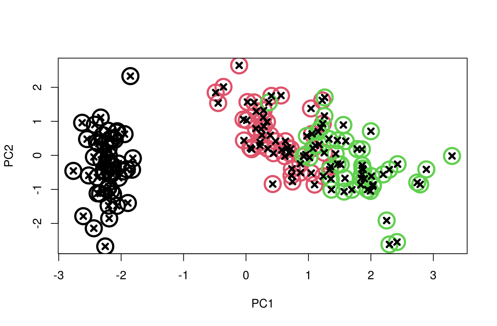
The crosses (our hand-made scores) fall exactly on the circles (prcomp()’s scores): five lines of linear algebra reproduce the black box. Note also how well the species separate along PC1 — the unsupervised method has found, from variance alone, very nearly the projection that the species colours would have suggested.
KEY prcomp() is nothing but: center, (optionally) scale, covariance, eigendecomposition. If you can read those five lines, PCA holds no secrets.
PCA as the best low-dimensional approximation
There is a second way to say what PCA does, and it is the one that explains why a score plot can be trusted. Keeping the first \(k\) components replaces each observation by its projection onto a \(k\)-dimensional plane. The data matrix is approximated by
\[ X_c \approx Z_k V_k^\top , \]
with \(Z_k\) the first \(k\) columns of scores and \(V_k\) the first \(k\) eigenvectors. The squared error of this approximation is exactly the variance that was discarded:
\[ \lVert X_c - Z_kV_k^\top\rVert^2 = (n-1)\sum_{j > k}\lambda_j . \]
k <- 2
X_hat <- scores[, 1:k] %*% t(vectors[, 1:k]) # back in the original coordinates
c(squared_error = sum((Xc - X_hat)^2),
discarded_variance = (nrow(Xc) - 1) * sum(values[-(1:k)]))#> squared_error discarded_variance
#> 24.95329 24.95329No other plane does better. This is the Eckart–Young theorem: among all approximations of rank \(k\), the one built from the first \(k\) principal components has the smallest squared error. Maximising the retained variance and minimising the reconstruction error are the same problem.
KEY — A PCA score plot is the most faithful two-dimensional picture of the data in the least-squares sense. It is still an approximation, and the discarded eigenvalues say how much is lost.
Worked example: the Iris data
head(iris)#> Sepal.Length Sepal.Width Petal.Length Petal.Width Species
#> 1 5.1 3.5 1.4 0.2 setosa
#> 2 4.9 3.0 1.4 0.2 setosa
#> 3 4.7 3.2 1.3 0.2 setosa
#> 4 4.6 3.1 1.5 0.2 setosa
#> 5 5.0 3.6 1.4 0.2 setosa
#> 6 5.4 3.9 1.7 0.4 setosaCorrelations
The correlation between predictors can be visualized in a correlation map:
Code
GGally::ggcorr(iris[, 1:4], label = TRUE, label_round = 2)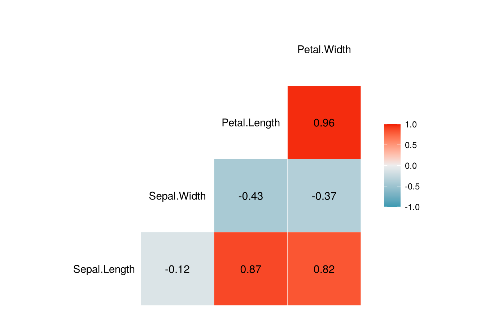
Data scaling in PCA
PCA maximizes variance — so variables with larger scales dominate. In the iris data the variances range from 0.19 (sepal width) to 3.12 (petal length): unscaled, PCA would mostly be a petal-length detector, not because petal length is biologically more important but because centimetres of petal happen to vary more than centimetres of sepal.
The solution is to standardize or normalize before applying PCA:
- Standardization: rescale each variable to mean 0 and variance 1 (this makes PCA operate on the correlation matrix);
- Min–max normalization: rescale each variable to the range \([0, 1]\).
⚠ prcomp() does not scale by default (scale. = FALSE). Forgetting scale. = TRUE is the single most common PCA error: your first component then simply reflects whichever variable has the biggest units.
Because the variances differ, we scale:
modelPCA <- prcomp(iris[, -5], scale. = TRUE, center = TRUE)Eigenvalues and variance explained
Visualize the distribution of the eigenvalues — the variances explained by the components:
plot(modelPCA)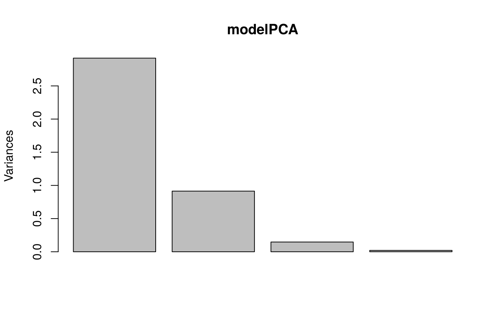
Variance decreases with each PC, as it must: that is how the components were constructed. This bar chart (often drawn as a line and then called a scree plot) is your main tool for deciding how many components to keep. Look for the point where the bars stop dropping steeply and settle into a flat tail of small, similar values — the “elbow”. The components before the elbow carry structure; the flat tail behaves like noise, each late component mopping up a residual scrap of variance. Here the elbow is unmistakable: one dominant component, a respectable second, and very little after.
↪ The same elbow logic returns in the next lecture for choosing the number of clusters \(K\) — a recurring heuristic wherever a method lets us buy complexity one unit at a time.
The summary() gives the numbers:
summary(modelPCA)#> Importance of components:
#> PC1 PC2 PC3 PC4
#> Standard deviation 1.7084 0.9560 0.38309 0.14393
#> Proportion of Variance 0.7296 0.2285 0.03669 0.00518
#> Cumulative Proportion 0.7296 0.9581 0.99482 1.00000The first principal component explains 73% of the variance; together with the second, 96%. Only 4% is residual. In the language of Day 1: a two-axis structure plus a 4%-of-variance residual is an excellent simple model of this four-dimensional cloud.
Loadings
modelPCA$rotation#> PC1 PC2 PC3 PC4
#> Sepal.Length 0.5210659 -0.37741762 0.7195664 0.2612863
#> Sepal.Width -0.2693474 -0.92329566 -0.2443818 -0.1235096
#> Petal.Length 0.5804131 -0.02449161 -0.1421264 -0.8014492
#> Petal.Width 0.5648565 -0.06694199 -0.6342727 0.5235971Reading the first two columns:
- PC1: petal length loads large and positive (0.580), petal width and sepal length similarly; sepal width loads smaller and negative (−0.269). PC1 is essentially overall flower size, with sepal width pulling mildly the other way.
- PC2: sepal width has by far the strongest loading (−0.923); petal length is nearly absent (−0.024). PC2 is a sepal-width axis, carrying the information PC1 left behind.
⚠ The signs of a component’s loadings are arbitrary — flipping all of them describes the same axis. Interpret loadings relative to each other within a component, never their absolute sign in isolation.
Squared loadings sum to 1
The unit-length constraint from the derivation is visible in the output — squaring a component’s loadings must sum to 1:
modelPCA$rotation[, 1]^2#> Sepal.Length Sepal.Width Petal.Length Petal.Width
#> 0.27150969 0.07254804 0.33687936 0.31906291sum(modelPCA$rotation[, 1]^2)#> [1] 1Plotting scores and loadings
The scores are the new coordinates on the new basis:
library(ggfortify)
autoplot(modelPCA, data = iris)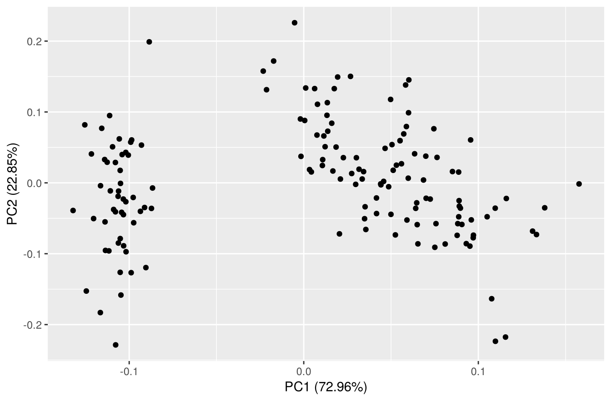
We can add more information by drawing the loadings into the score plot — the classic biplot:
autoplot(modelPCA, data = iris,
loadings = TRUE, loadings.colour = "blue",
loadings.label = TRUE, loadings.label.size = 3)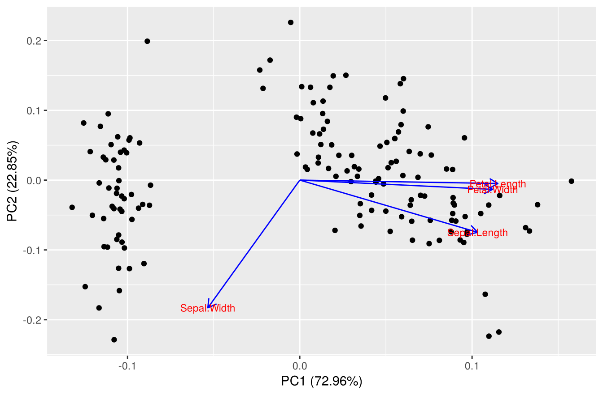
To check our reading of the loadings, correlate the point size with petal length — it should grow along PC1:
autoplot(modelPCA, data = iris, size = "Petal.Length",
loadings = TRUE, loadings.colour = "blue",
loadings.label = TRUE, loadings.label.size = 3)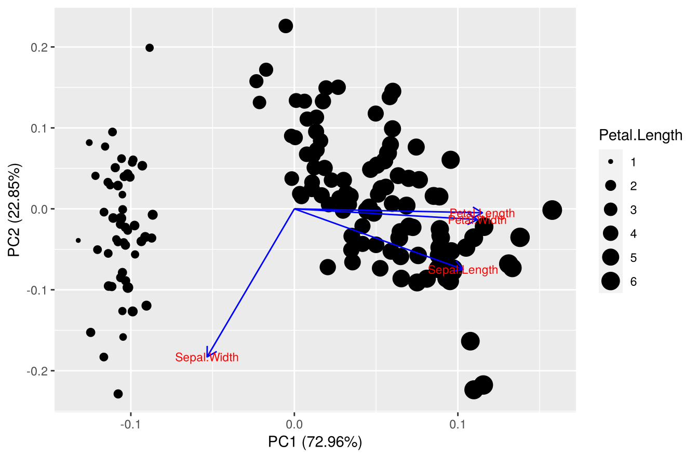
And with sepal width — it should vary along PC2 instead:
autoplot(modelPCA, data = iris, size = "Sepal.Width",
loadings = TRUE, loadings.colour = "blue",
loadings.label = TRUE, loadings.label.size = 3)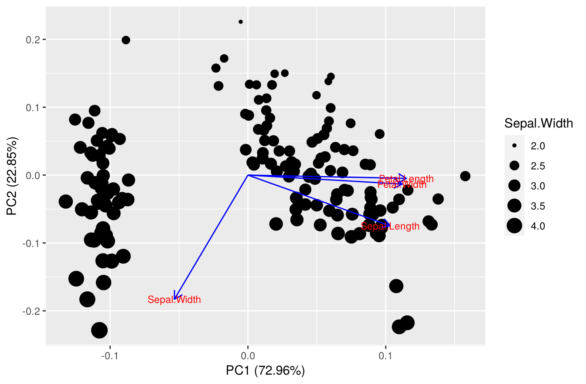
Finally, add the species information we withheld all along:
autoplot(modelPCA, data = iris, size = "Petal.Length", colour = "Species",
loadings = TRUE, loadings.colour = "blue",
loadings.label = TRUE, loadings.label.size = 3)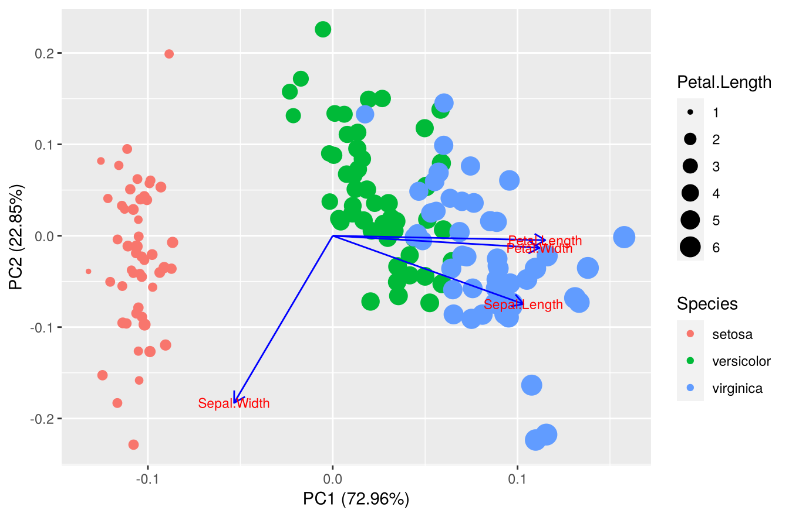
The clusters PCA found unsupervised align almost perfectly with the species. Setosa separates completely along PC1 (small petals); versicolor and virginica overlap partially — a two-dimensional shadow can only show so much.
KEY A biplot shows rows and columns at once: points are observations (scores), arrows are variables (loadings). Points far along an arrow’s direction score high on that variable.
The score cloud in 3D
We began this chapter rotating the raw iris cloud, hunting by hand for a good projection. Now do the same with the transformed cloud — the scores on the first three principal components, which together carry 99.5% of the variance:
Code
Scores3D <- as.data.frame(modelPCA$x)
Scores3D$Species <- iris$Species
plot_ly(Scores3D,
x = ~PC1, y = ~PC2, z = ~PC3,
color = ~Species,
type = "scatter3d", mode = "markers",
marker = list(size = 4)) |>
layout(scene = list(
xaxis = list(title = "PC1 (73%)"),
yaxis = list(title = "PC2 (23%)"),
zaxis = list(title = "PC3 (3.7%)")
))Rotate it and notice two things. First, the hunting is over: the default face-on view — PC1 across, PC2 up — is the best projection, because that is how the axes were built. Where the raw cloud made you search for a good angle, the PCA cloud puts the good angle first. Second, watch what happens when you rotate PC3 towards you: the picture barely changes. The cloud is thin in the PC3 direction — only 3.7% of the variance lives there — so this axis is nearly free to discard. You are looking directly at the dimension-reduction decision: the flat pancake spanned by PC1 and PC2 is the structure, and the slight thickness in PC3 (plus the invisible 0.5% in PC4) is the residual.
KEY In the rotated coordinate system the least informative axis is the one you can afford to lose. Dimension reduction is simply looking at the cloud face-on and ignoring its thickness.
Eigenvalue and Singular Value Decomposition
There are two common ways to compute the eigenvalues and eigenvectors:
- Eigenvalue decomposition of the covariance matrix (what we did above);
- Singular Value Decomposition (SVD) of the data matrix itself.
prcomp() internally relies on the SVD route, which is numerically more stable and works better when \(n \ll p\) — many more variables than observations, the standard situation in, for example, gene-expression data.
Iris_scaled <- scale(iris[, -5], center = TRUE, scale = TRUE)
svd_Iris <- svd(Iris_scaled)
Scores <- svd_Iris$u %*% diag(svd_Iris$d)
plot(Scores[, 1], Scores[, 2],
xlab = "PC1",
ylab = "PC2",
main = "Scores: open circles SVD, closed red eigen-decomposition",
cex = 2, col = "blue")
points(modelPCA$x[, 1], modelPCA$x[, 2], pch = 19, col = "red")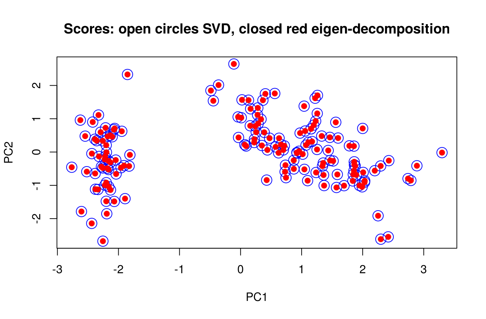
Identical scores, two routes. For this course the eigen-route is the one to understand; the SVD is the one your software uses.
↪ The \(n \ll p\) situation — thousands of genes, dozens of samples — returns with force on Day 9: when there are more predictors than observations, ordinary least squares breaks down entirely.
When genes outnumber samples
An expression matrix has perhaps 40 samples and 20,000 genes. Its covariance matrix is \(20{,}000 \times 20{,}000\), with four hundred million entries, and most of it is redundant: centred data on \(n\) samples span at most \(n - 1\) dimensions, so at most \(n-1\) eigenvalues are non-zero.
The way out is a small piece of algebra. Suppose \(\mathbf{u}\) is an eigenvector of the small \(n \times n\) matrix \(X_cX_c^\top\):
\[ X_cX_c^\top\mathbf{u} = \mu\,\mathbf{u} \quad\Longrightarrow\quad X_c^\top X_c\,(X_c^\top\mathbf{u}) = \mu\,(X_c^\top\mathbf{u}). \]
Multiplying both sides by \(X_c^\top\) shows that \(X_c^\top\mathbf{u}\) is an eigenvector of the large \(p \times p\) matrix \(X_c^\top X_c\), with the same eigenvalue. The large problem can be solved through the small one. A simulation with 40 samples and 2,000 genes, of which 60 differ between two groups, shows the gain.
set.seed(7)
n_s <- 40; p_g <- 2000
G <- matrix(rnorm(n_s * p_g), n_s, p_g)
grp <- rep(c("A", "B"), each = n_s / 2)
G[grp == "B", 1:60] <- G[grp == "B", 1:60] + 1.5
Gc <- scale(G, scale = FALSE)
t_large <- system.time(e_large <- eigen(t(Gc) %*% Gc / (n_s - 1), symmetric = TRUE))
t_small <- system.time(e_small <- eigen(Gc %*% t(Gc) / (n_s - 1), symmetric = TRUE))
rbind(large_2000x2000 = c(e_large$values[1:3], seconds = t_large[["elapsed"]]),
small_40x40 = c(e_small$values[1:3], seconds = t_small[["elapsed"]]))#> seconds
#> large_2000x2000 88.4839 65.1699 62.82908 6.159
#> small_40x40 88.4839 65.1699 62.82908 0.003The eigenvalues are identical and the small problem is solved in a fraction of the time. The loadings follow by mapping back, and the scores are available directly.
v1 <- t(Gc) %*% e_small$vectors[, 1]
v1 <- v1 / sqrt(sum(v1^2)) # loading vector of PC1
c(agreement_with_large = abs(sum(v1 * e_large$vectors[, 1])),
nonzero_eigenvalues = sum(e_large$values > 1e-8))#> agreement_with_large nonzero_eigenvalues
#> 1 39pc <- prcomp(G)
plot(pc$x[, 1:2], col = ifelse(grp == "A", "steelblue", "firebrick"), pch = 19,
main = "40 samples, 2000 genes")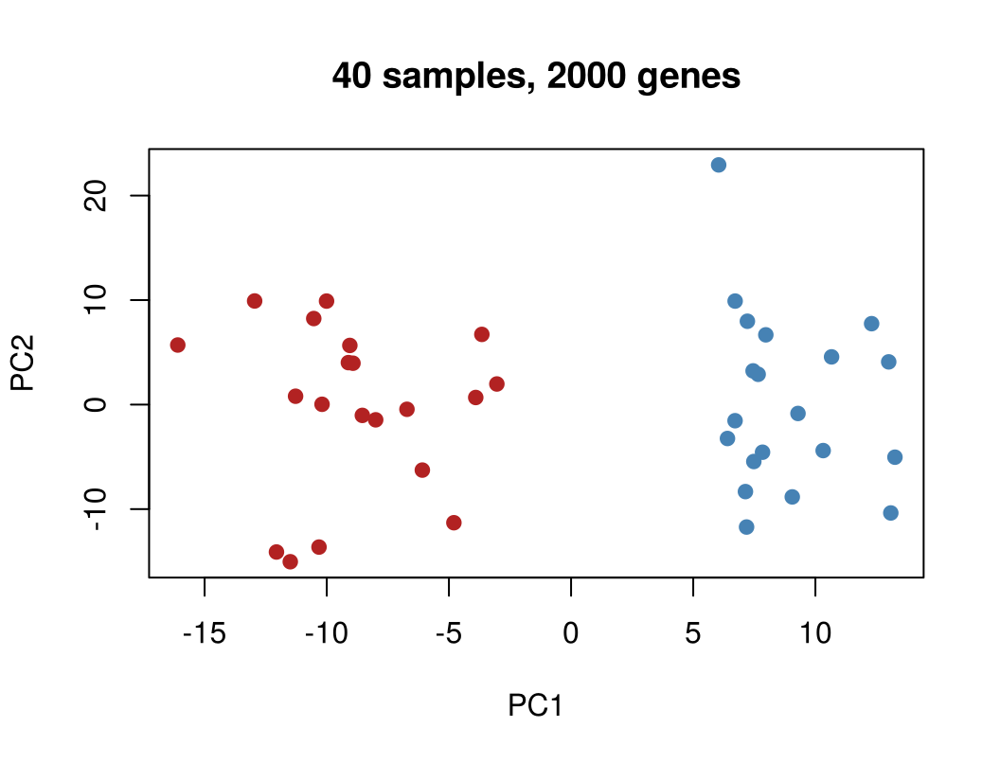
Only 39 eigenvalues are non-zero, as predicted. The singular value decomposition performs this bookkeeping automatically, which is the practical reason why prcomp() is built on it.
⚠ With \(p \gg n\), PCA can describe at most \(n - 1\) directions. The remaining \(p - n + 1\) dimensions are not “unimportant”; the data simply contain no information about them.
Second example: the Olympic heptathlon
In the 1988 Olympics in Seoul the heptathlon was won by one of the stars of women’s athletics in the USA, Jackie Joyner-Kersee. The results for all 25 competitors across the seven disciplines are given here. The total score is a possible future response variable — we deliberately do not take it into account in the PCA itself.
library(HSAUR3)
data("heptathlon")
head(heptathlon)#> hurdles highjump shot run200m longjump javelin run800m
#> Joyner-Kersee (USA) 12.69 1.86 15.80 22.56 7.27 45.66 128.51
#> John (GDR) 12.85 1.80 16.23 23.65 6.71 42.56 126.12
#> Behmer (GDR) 13.20 1.83 14.20 23.10 6.68 44.54 124.20
#> Sablovskaite (URS) 13.61 1.80 15.23 23.92 6.25 42.78 132.24
#> Choubenkova (URS) 13.51 1.74 14.76 23.93 6.32 47.46 127.90
#> Schulz (GDR) 13.75 1.83 13.50 24.65 6.33 42.82 125.79
#> score
#> Joyner-Kersee (USA) 7291
#> John (GDR) 6897
#> Behmer (GDR) 6858
#> Sablovskaite (URS) 6540
#> Choubenkova (URS) 6540
#> Schulz (GDR) 6411Correlations and covariance structure
Code
ggpairs(heptathlon, columns = colnames(heptathlon))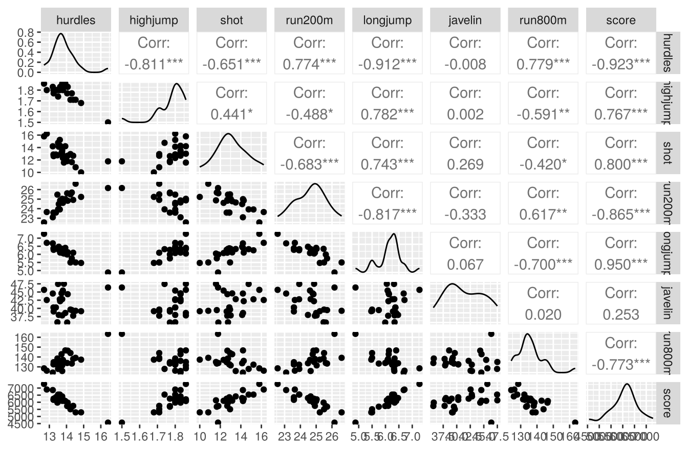
Code
set.seed(589)
cov_matrix <- cov(heptathlon[, -8])
g <- graph_from_adjacency_matrix(abs(cov_matrix), mode = "undirected",
diag = FALSE, weighted = TRUE)
g <- delete_edges(g, E(g)[E(g)$weight < 0.5])
E(g)$width <- E(g)$weight
plot(g,
vertex.size = 15,
vertex.label.cex = 0.8,
main = "Graph from Covariance Matrix")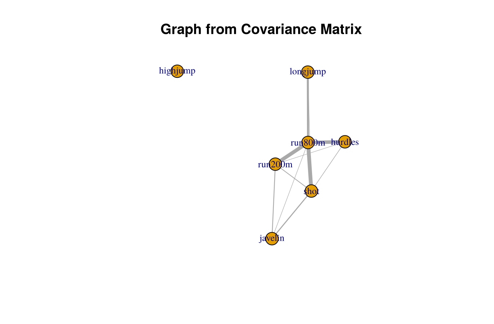
The disciplines are heavily intercorrelated — a fast 200 m runner tends also to hurdle fast and jump far. For a regression of score on the seven raw disciplines this is a problem with a name we will keep meeting: collinearity. For PCA it is an opportunity: correlated variables mean redundant dimensions, and redundant dimensions compress well.
DEF Collinearity: strong correlation among explanatory variables. It makes individual regression coefficients unstable and their standard errors large — the model cannot decide whom to credit for a shared effect.
The PCA
modelPCA_Hep <- prcomp(heptathlon[, -8], scale. = TRUE, center = TRUE)
plot(modelPCA_Hep)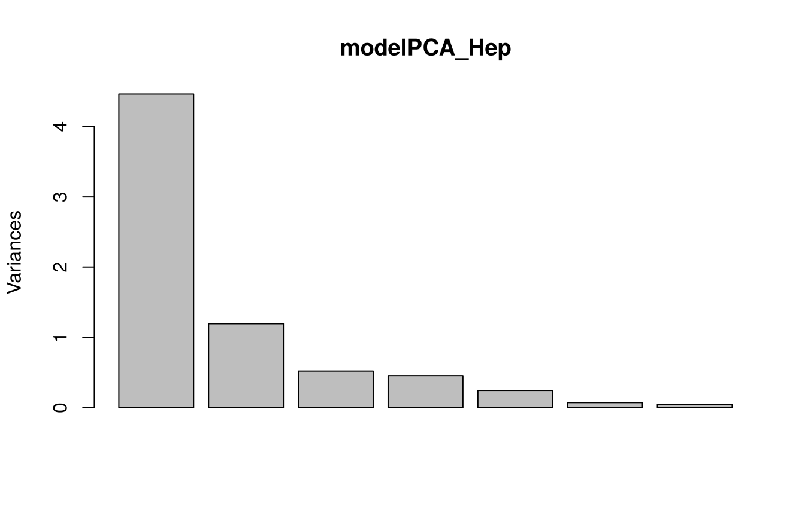
summary(modelPCA_Hep)#> Importance of components:
#> PC1 PC2 PC3 PC4 PC5 PC6 PC7
#> Standard deviation 2.1119 1.0928 0.72181 0.67614 0.49524 0.27010 0.2214
#> Proportion of Variance 0.6372 0.1706 0.07443 0.06531 0.03504 0.01042 0.0070
#> Cumulative Proportion 0.6372 0.8078 0.88223 0.94754 0.98258 0.99300 1.000063% of the variance is explained by the first principal component; together with the second, 81% of the total variance.
Loadings
modelPCA_Hep$rotation[, 1:6]#> PC1 PC2 PC3 PC4 PC5 PC6
#> hurdles 0.4528710 -0.15792058 0.04514996 -0.02653873 -0.09494792 -0.78334101
#> highjump -0.3771992 0.24807386 -0.36777902 0.67999172 -0.01879888 -0.09939981
#> shot -0.3630725 -0.28940743 0.67618919 0.12431725 -0.51165201 0.05085983
#> run200m 0.4078950 0.26038545 -0.08359211 0.36106580 -0.64983404 0.02495639
#> longjump -0.4562318 0.05587394 0.13931653 0.11129249 0.18429810 -0.59020972
#> javelin -0.0754090 -0.84169212 -0.47156016 0.12079924 -0.13510669 0.02724076
#> run800m 0.3749594 -0.22448984 0.39585671 0.60341130 0.50432116 0.15555520- PC1: only the javelin loading is small relative to the others — every other discipline contributes substantially. PC1 is close to overall athletic ability.
- PC2: the javelin has its strongest (negative) correlation here.
Pay attention to the signs on PC1, because they encode something real about the disciplines. The running events (hurdles, run200m, run800m) load positively while the jumping and throwing events (highjump, longjump, shot) load negatively — and this is not a contradiction but the units talking. Running events are measured in time, where smaller is better; jumps and throws in distance, where larger is better. A strong athlete therefore has low times and high distances, and PC1 captures exactly this anti-correlation: a low (negative) score on PC1 marks a strong all-round athlete, a high score a weak one. Keep this in mind for the regression below — it explains why the PC1 coefficient will come out negative.
This is a nice illustration that different PCs represent different qualities of the system: the art of throwing a javelin asks for different qualities — it rewards specialization, and PCA isolates that specialization on its own axis.
The unit-length check again:
modelPCA_Hep$rotation[, 1]^2#> hurdles highjump shot run200m longjump javelin
#> 0.205092185 0.142279259 0.131821638 0.166378365 0.208147501 0.005686517
#> run800m
#> 0.140594536sum(modelPCA_Hep$rotation[, 1]^2)#> [1] 1Scores
autoplot(modelPCA_Hep, colour = "score", label = TRUE,
label.size = heptathlon$score / 3000, loadings = TRUE,
loadings.colour = "blue", loadings.label = TRUE,
loadings.label.size = 3,
data = heptathlon)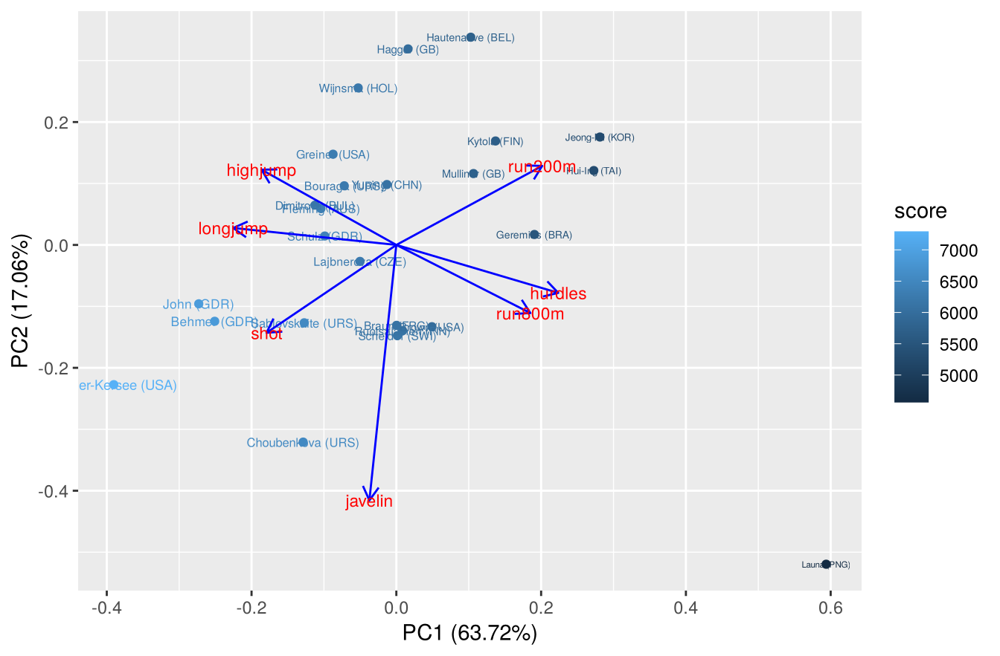
Note that shot and run200m point in nearly opposite directions, which should be clear given the rotations:
- shot: PC1 = −0.363, PC2 = −0.289;
- run200m: PC1 = 0.408, PC2 = 0.260.
PCA and regression
Now we bring the response back. We could plot the heptathlon score against PC1:
plot(heptathlon$score ~ modelPCA_Hep$x[, 1],
ylab = "Heptathlon Score", xlab = "First Principal Component")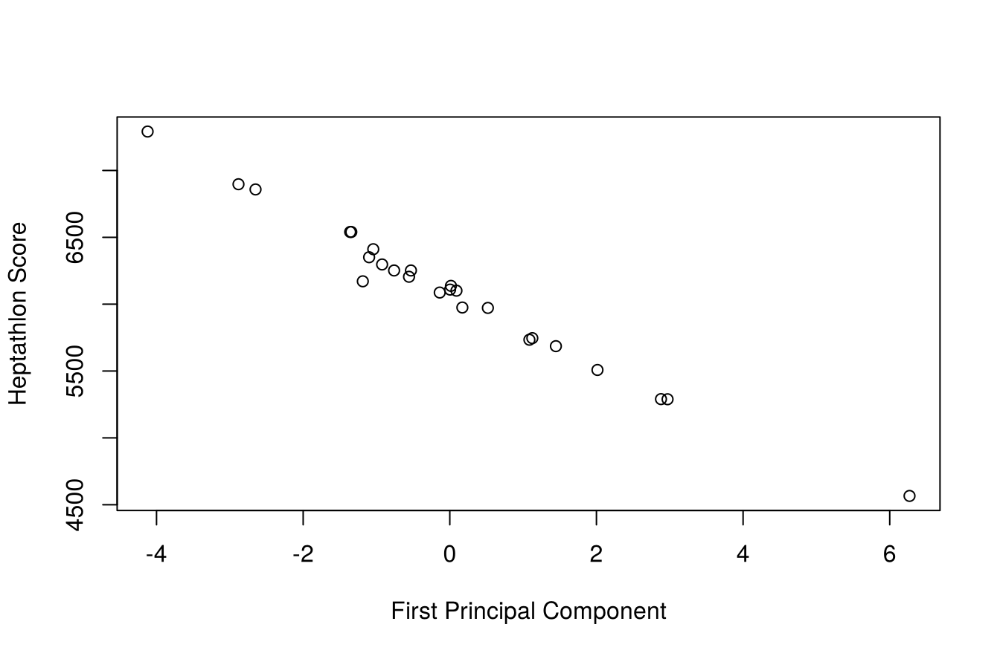
And we can build a model predicting the score from principal components. Note that a model based on the original seven variables would be problematic because of collinearity; the components, being orthogonal, are uncorrelated by construction — collinearity is impossible among them.
KEY Principal components are orthogonal, hence uncorrelated. Regressing on components instead of raw variables removes collinearity by construction — this is the seed of Principal Component Regression.
Regression with one PC
Model <- lm(heptathlon$score ~ modelPCA_Hep$x[, 1])
summary(Model)#>
#> Call:
#> lm(formula = heptathlon$score ~ modelPCA_Hep$x[, 1])
#>
#> Residuals:
#> Min 1Q Median 3Q Max
#> -236.12 -40.21 -9.25 41.93 148.08
#>
#> Coefficients:
#> Estimate Std. Error t value Pr(>|t|)
#> (Intercept) 6090.600 15.462 393.9 <2e-16 ***
#> modelPCA_Hep$x[, 1] -266.774 7.472 -35.7 <2e-16 ***
#> ---
#> Signif. codes: 0 '***' 0.001 '**' 0.01 '*' 0.05 '.' 0.1 ' ' 1
#>
#> Residual standard error: 77.31 on 23 degrees of freedom
#> Multiple R-squared: 0.9823, Adjusted R-squared: 0.9815
#> F-statistic: 1275 on 1 and 23 DF, p-value: < 2.2e-16One constructed axis explains 98% of the variance in the score. And the coefficient is negative (−266.8 points per unit of PC1), exactly as the loadings predicted: low PC1 means fast times and long jumps, hence a high score. Always close this loop when you regress on components — a component has no units and no meaning of its own until you have read its loadings.
Regression with two PCs
We can increase accuracy by including more components:
Model2 <- lm(heptathlon$score ~ modelPCA_Hep$x[, 1] + modelPCA_Hep$x[, 2])
summary(Model2)#>
#> Call:
#> lm(formula = heptathlon$score ~ modelPCA_Hep$x[, 1] + modelPCA_Hep$x[,
#> 2])
#>
#> Residuals:
#> Min 1Q Median 3Q Max
#> -218.102 -12.853 3.512 27.091 55.780
#>
#> Coefficients:
#> Estimate Std. Error t value Pr(>|t|)
#> (Intercept) 6090.600 10.716 568.357 < 2e-16 ***
#> modelPCA_Hep$x[, 1] -266.774 5.179 -51.513 < 2e-16 ***
#> modelPCA_Hep$x[, 2] -50.917 10.008 -5.088 4.26e-05 ***
#> ---
#> Signif. codes: 0 '***' 0.001 '**' 0.01 '*' 0.05 '.' 0.1 ' ' 1
#>
#> Residual standard error: 53.58 on 22 degrees of freedom
#> Multiple R-squared: 0.9919, Adjusted R-squared: 0.9911
#> F-statistic: 1340 on 2 and 22 DF, p-value: < 2.2e-16Note that the PC1 coefficient did not change when PC2 entered — with orthogonal predictors, each coefficient is estimated independently of the others. Compare this with what collinear raw predictors do to each other’s estimates.
And the last PC?
plot(heptathlon$score ~ modelPCA_Hep$x[, 6],
ylab = "Heptathlon Score", xlab = "6th Principal Component")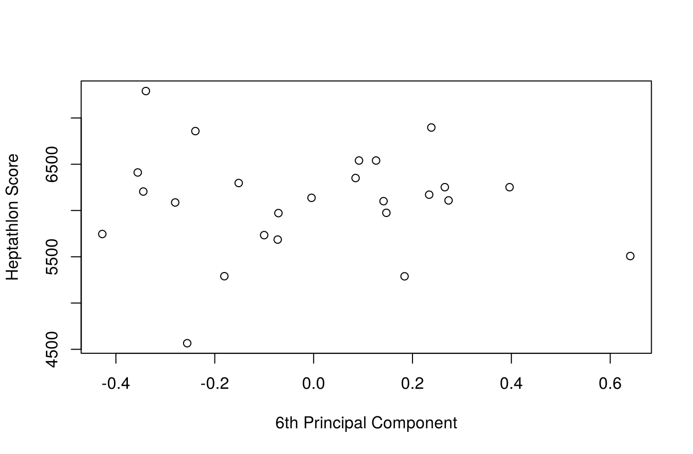
Model3 <- lm(heptathlon$score ~ modelPCA_Hep$x[, 1] + modelPCA_Hep$x[, 2] +
modelPCA_Hep$x[, 6])
summary(Model3)#>
#> Call:
#> lm(formula = heptathlon$score ~ modelPCA_Hep$x[, 1] + modelPCA_Hep$x[,
#> 2] + modelPCA_Hep$x[, 6])
#>
#> Residuals:
#> Min 1Q Median 3Q Max
#> -203.026 -10.177 9.189 23.022 61.702
#>
#> Coefficients:
#> Estimate Std. Error t value Pr(>|t|)
#> (Intercept) 6090.600 10.316 590.382 < 2e-16 ***
#> modelPCA_Hep$x[, 1] -266.774 4.986 -53.510 < 2e-16 ***
#> modelPCA_Hep$x[, 2] -50.917 9.635 -5.285 3.07e-05 ***
#> modelPCA_Hep$x[, 6] -64.504 38.982 -1.655 0.113
#> ---
#> Signif. codes: 0 '***' 0.001 '**' 0.01 '*' 0.05 '.' 0.1 ' ' 1
#>
#> Residual standard error: 51.58 on 21 degrees of freedom
#> Multiple R-squared: 0.9928, Adjusted R-squared: 0.9918
#> F-statistic: 964.7 on 3 and 21 DF, p-value: < 2.2e-16The sixth component carries about 1% of the predictor variance and, added to the model, earns no significant coefficient. Each extra component spends a degree of freedom — the currency of Day 1 — and the late components buy essentially nothing with it. Somewhere between “one component” and “all components” lies the right amount of complexity.
This idea leads to a fitting methodology that can deal with collinearity — Principal Component Regression — and to its refinement PLS. Deciding how many components to keep is a model-selection problem, and answering it honestly requires the tools of the coming lectures: cross-validation to measure what a model complexity is truly worth, and regularisation as the general machinery for taming many correlated predictors.
↪ Day 7 (cross-validation): choosing the number of components. Day 9: PCR, PLS, ridge and lasso as four answers to the same collinearity problem.
Summary
- Unsupervised learning drops the response variable but keeps the statistical thesis: approximate a complex cloud by a simple structure plus residual.
- PCA finds new, orthogonal axes — linear combinations of the variables — ordered by the variance they capture. The eigenvalues partition the total variance exactly, the same budget logic as the ANOVA variance partition.
- Loadings describe the axes in terms of the original variables; scores are the observations’ coordinates on the new axes; the biplot shows both.
- Scale your variables (
scale. = TRUE) unless their units are genuinely comparable — PCA chases variance, and raw variance follows units. - Keeping the first few components and discarding the rest is dimension reduction: retained components are structure, discarded components are residual. Around 70% variance explained is a common working threshold.
- Components are uncorrelated by construction, which makes them attractive regression predictors when the raw variables are collinear — the bridge to PCR, PLS, and Day 9.
Bridge to the practical
In the practical you will run PCA yourself on a multivariate biological dataset: inspect the covariance and correlation structure first, decide on scaling and defend the decision, then read the eigenvalues, loadings, and biplot the way we read them here — as a variance budget, a description of the new axes, and a shadow of the data cloud. The guiding question is always the same: how many dimensions does this data cloud really have, and what do the important directions mean biologically?
Next lecture we keep the unsupervised setting but change the primitive: instead of asking in which directions the cloud varies, we ask which points belong together. From variance to distance — cluster analysis.